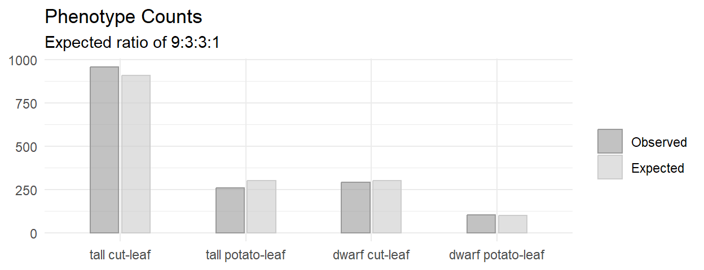
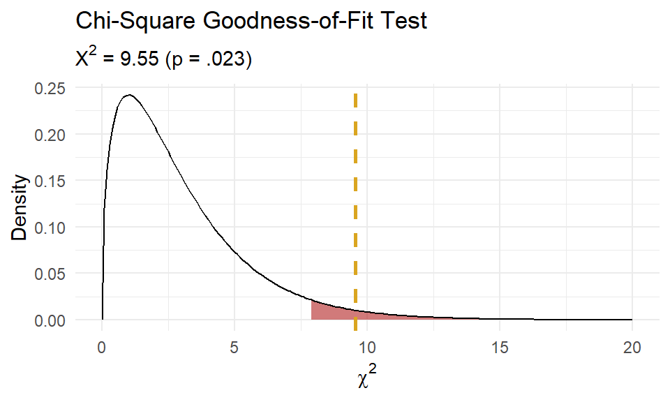
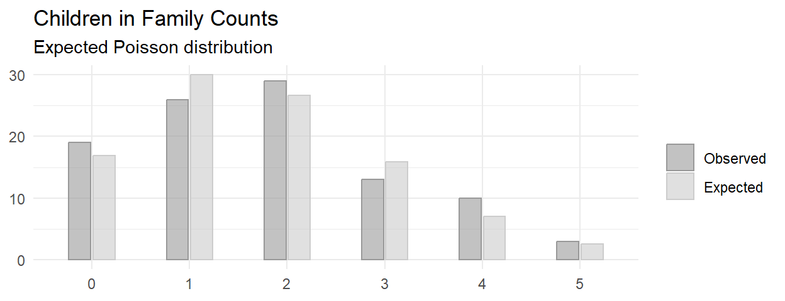
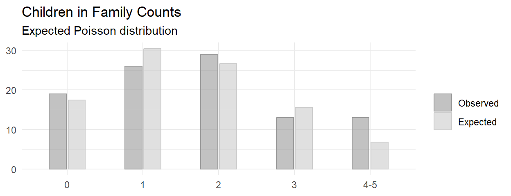
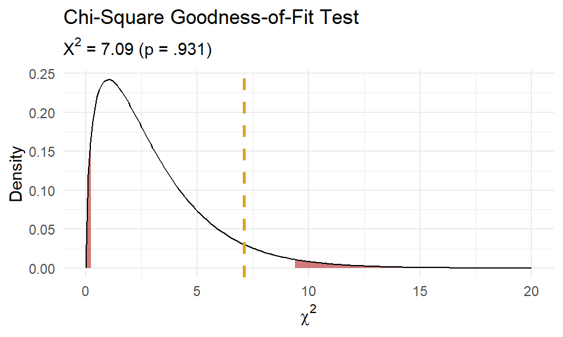

4.4 Chi-Squared Goodness-of-Fit Test
Use the chi-squared goodness-of-fit test to test whether the observed frequency counts, \(O_j\), of the \(J\) levels of a categorical variable differ from the expected frequency counts, \(E_j\). \(H_0\) is \(O_j = E_j\). You can use this test for dichotomous, nominal, or ordinal variables. There are only two conditions to use this test:
- the observations are independent, meaning either random assignment or random sampling without replacement from <10% of the population, and
- the expected frequency in each group is >=5.
The Pearson goodness-of-fit test statistic is
\[X^2 = \sum \frac{(O_j - E_j)^2}{E_j}\]
where \(O_j = p_j n\) and \(E_j = \pi_j n\). The sampling distribution of \(X^2\) approaches the \(\chi_{J-1}^2\) as the sample size \(n \rightarrow \infty\). The assumption that \(X^2\) is distributed \(\sim \chi^2\) is not quite correct, so you will see researchers subtract .5 from the differences to increase the p-value, the so-called Yates Continuity Correction.
\[X^2 = \sum \frac{(O_j - E_j - 0.5)^2}{E_j}\]
\(X^2 \rightarrow 0\) as the saturated model (the observed data represent the fit of the saturated model, the most complex model possible with the data) proportions approach the expected proportions, \(p_j \rightarrow \pi_j\). The chi-squared test calculates the probability of the occurrence of \(X^2\) at least as extreme given that it is a chi-squared random variable with degrees of freedom equal to the number of levels of the variable minus one, \(J-1\).
Example with Theoretical Values
A researcher crosses tall cut-leaf tomatoes with dwarf potato-leaf tomatoes, then classifies the n = 1,611 offspring’s phenotype. The four phenotypes should occur with relative frequencies 9:3:3:1. The observed frequencies constitute a one-way table.
If you only care about one level (or if the variable is binary) of if, conduct a one-proportion Z-test or an exact binomial test. Otherwise, conduct an exact multinomial test (recommended when n <= 1,000), Pearson’s chi-squared goodness-of-fit test, or a G-test.

Conditions
This is a randomized experiment. The minimum expected frequency was 100, so the chi-squared test of independence is valid.
Had the data violated the \(\ge\) 5 condition, you could run an exact test (like the binomial, or in this case, the multinomial), or lump some factor levels together.
Results
You can calculate \(X^2\) by hand, and find the probability of a test statistic at least as extreme using the \(\chi^2\) distribution with 4-1 = 3 degrees of freedom.
(pheno_x2 <- sum((pheno_obs - pheno_exp)^2 / pheno_exp))
## [1] 9.54652
(pheno_p <- pchisq(q = pheno_x2, df = length(pheno_type) - 1, lower.tail = FALSE))
## [1] 0.02284158That is what chisq.test() does. The function applies the Yates continuity correction by default, so I had to specify correct = FALSE to exclude it. In this case, setting it to TRUE has almost no effect because the sample size is large.
##
## Chi-squared test for given probabilities
##
## data: pheno_obs
## X-squared = 9.5465, df = 3, p-value = 0.02284As always, plot the distribution.

At this point you can report,
Of the 1,611 offspring produced from the cross-fertiliation, 956 were tall cut-leaf, 258 were tall potato-leaf, 293 where dwarf cut-leaf, and 104 were dwarf potato-leaf. A chi-square goodness-of-fit test was conducted to determine whether the offspring had the same proportion of phenotypes as the theoretical distribution. The minimum expected frequency was 101. The chi-square goodness-of-fit test indicated that the number of tall cut-leaf, tall potato-leaf, dwarf cut-leaf, and dwarf potato-leaf offspring was statistically significantly different from the proportions expected in the theoretical distribution (\(X^2\)(3) = 9.547, p = 0.023).
If you reject \(H_0\), inspect the residuals to learn which differences contribute most to the rejection. Notice how \(X^2\) is a sum of squared standardized cell differences, or “Pearson residuals”,
\[r_i = \frac{o_j - e_j}{\sqrt{e_j}}\]
Cells with the largest \(|r|\) contribute the most to the total \(X^2\).
## tall cut-leaf tall potato-leaf dwarf cut-leaf dwarf potato-leaf
## 0.28682269 0.67328098 0.02848093 0.01141540The two “tall” cells contributed over 95% of the \(X^2\) test statistic, with the tall potato-leaf accounting for 67%. This aligns with what you’d expect from the bar plot.
Example with Theoretical Distribution
You need to reduce the degrees of freedom (df) in the chi-squared goodness-of-fit test by 1 if you test whether the data conform to a particular distribution instead of a set of theoretical values.
Suppose you sample n = 100 families and count the number of children. The count of children is a Poisson random variable, \(J\), with maximum likelihood estimate \(\hat{\lambda} = \sum{j_i O_i} / \sum{O_i}\). Test whether the observed values can be described as samples from a Poisson random variable. The probabilities for each possible count are
\[f(j; \lambda) = \frac{e^{-\hat{\lambda}} \hat{\lambda}^j}{j!}.\]

Conditions
This is random sampling. The minimum expected frequency was 2, so the data violates the \(\ge\) 5 rule. Lump the last two categories into “4-5”.

The minimum expected frequency was 6, so now the chi-squared test of independence is valid.
Results
Compare the expected values to the observed values with the chi-squared goodness of fit test, but in this case \(df = 5 - 1 - 1\) because the estimated parameter \(\lambda\) reduces df by 1. You cannot set df in chisq.test(), so perform the test manually.
(X2 <- sum((o - e)^2 / e))
## [1] 7.092968
(p.value <- pchisq(q = X2, df = length(j) - 1 - 1, lower.tail = FALSE))
## [1] 0.06899286
At this point you can report,
Of the 100 families sampled, 19 had no children, 26 had one child, 29 had two children, 13 had three children, and 13 had 4 or 5 children. A chi-square goodness-of-fit test was conducted to determine whether the observed family sizes follow a Poisson distribution. The minimum expected frequency was 13. The chi-square goodness-of-fit test indicated that the number of children was not statistically significantly different from the proportions expected in the Poisson distribution (\(X^2\)(3) = 7.093, p = 0.069).